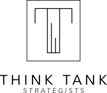

جدول الجلسات
قاعة الشركة · من 9:00 إلى 13:00 · باللغة العربية

14الاثنينديسمبر
قراءة الإشارات
- 9:00
- الاتجاهات الكبرى التي تمسّ قطاعك في السنوات العشر القادمة
- 10:30
- استراحة
- 10:45
- تمرين في مجموعات: خريطة القوى المؤثرة على جهتك
- 12:30
- خلاصة اليوم وما تحضّره للغد
15الثلاثاءديسمبر
بناء السيناريوهات
- 9:00
- اختيار المحورين الأقل يقيناً والأكبر أثراً
- 10:30
- استراحة
- 10:45
- كل مجموعة تكتب أربعة سيناريوهات لجهتها
- 12:15
- عرض السيناريوهات ونقاشها
16الأربعاءديسمبر
من السيناريو إلى القرار
- 9:00
- اختبار استراتيجيتك الحالية أمام كل سيناريو
- 10:30
- استراحة
- 10:45
- مؤشرات الإنذار المبكر: كيف تعرف أي سيناريو بدأ يتحقق
- 12:15
- خطة التسعين يوماً، ثم الختام
الجلسات الثلاث حضورية ومتصلة؛ كل يوم يبني على الذي قبله.
تخرج من القاعة ومعك
- خريطة للقوى التي ستغيّر قطاعكمرتّبة حسب أثرها ودرجة اليقين فيها، لا قائمة عناوين عامة.
- أربعة سيناريوهات مكتوبة لجهتككتبتها أنت مع مجموعتك، وتستطيع عرضها على مجلسك كما هي.
- قائمة مؤشرات إنذار مبكرتراقبها كل ربع سنة لتعرف أي سيناريو يقترب.
- خطة تسعين يوماًما الذي تبدأ به مع فريقك في أول أسبوع بعد الورشة.